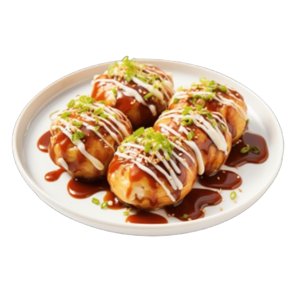

Japanese Streetfood

Takoyaki is a round, fried food made from batter, small pieces of tender octopus and other ingredients, like green onions and ginger. They are considered a Japanese street food are popular at festivals, often prepared from food stands right in front of the prospective customers.
Prep time: 10 mins | Cook time: 10 mins